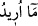

iki akdin (hizmet ve evlendirmenin) bu şeriata göre gereğinin tafsili ve bir beyanı
değildir.
“Eğer” bu hizmet ve çalışma süresini “on yıla tamamlarsan artık o kendinden” bir
iyilik ve fazilet olur. Tamamlaman benim sana zorunlu bir şartım değildir; kendi
isteğinle fazladan bir iyilik yapmış olursun, “yoksa sana” zorluk çıkarmak ve “ağırlık
vermek istemem.” On yıl boyunca senin bedenine sıkıntı yüklemek, yahut zamana uyma
ve işleri yerine getirme hususunda münakaşa etmek istemem. Yâni sana öyle bir iş
buyururum ki kolay olur, sıkıntıya düşmezsin.
“
(güçlük)” kelimesi, “
(güç olmak, güçlüğe düşürmek)” fiilinden türemiştir.
Çünkü sana zor gelen şey, ona güç yetirmedeki inancını kırar ve onu izâle ve yok
etmedeki kararlılığını azaltır.
Bazı ârifler demiştir ki: Şuayb (a.s.), nübüvvet nûruyla Mûsâ (a.s.)’ın sekiz yılda
kemâle ereceğini ve bundan sonra terbiyeye ihtiyacı olmayacağını ve ancak kemâlin
kemâlinin de on yılda tamamlanacağını görmüştür. Zira o, Mûsâ (a.s.)’ın on seneden
sonra irâde makamında kalmayacağını; ondan sonra istiklâl ve istikâmet makamında
olacağını ve ardından da irade sorumluluğu taşımayacağını nübüvvet nuruyla bilmiştir.
İşte bu nedenle “
Ben istiyorum...” ve “
Ben istemiyorum...” demiştir.
Fakir (Bursevî) der ki: Bu te’vil, o vakitte Mûsâ (a.s.)’ın yaşının otuz olmasını
gerektirir. Çünkü on yılı tamamlayınca Mısır’a döndü. Yolda kendisine peygamberlik
verildi. Daha önce de ifâde edildiği gibi onun peygamber oluşu kırk yaşında idi. Bu, her
asırda fenâ ehli için Allah’ın bir sünnetidir. Sülûk yaşından otuzsekiz veya kırk yıl
geçince fenâ ve bakâ kemâle erer ve rızık biter. Bunu anla!
“İnşâallah beni” muâmelesi güzel, halim selim, ahdine vefa gösteren sâlih ve “iyi
kimselerden (işverenlerden) bulacaksın.”
“İnşaallah (Allah dilerse)” ifâdesiyle, Allah’dan teberrük ve işlerindeki başarıyı
O’na havâle etmek istenilmiştir; yoksa salâhı Allah’ın dileğine bağlamak
kasdedilmemiştir.
Hadis-i şerifte şöyle buyrulmuştur: “Peygamber Şuayb (a.s.) Allah’a muhabbetinden
dolayı ağlardı; nihâyet âmâ oldu. Allah gözünü tekrar ona iâde etti ve şöyle vahyetti:
“Ey Şuayb, nedir bu ağlama! Ağlamanın sebebi, cennet iştiyakı mı, yoksa cehennem
korkusu mu?” Şuayb (a.s.) dedi ki: “Ey Allah’ım ve ey efendim! Sen de biliyorsun ki,
ben ne cennet iştiyakından ve ne de cehennem ateşinin korkusundan dolayı ağlıyorum.
Kalbimde muhabbetini duydum. Senin cemâlini gördüğüm zaman bana ne ile muâmele
edeceğine aldırmam.” Allah da ona şöyle vahyetti: Ey Şuayb! Şâyed bu gerçekse benim
seninle karşılaşmam (likâ) mubârek olsun. Ey Şuayb! İşte bu yüzden ben seni
konuştuğum (kelîmullah) Mûsâ b. İmrân’a hizmet ettirdim.[100]
Bil ki, Mûsâ (a.s.)’ın Firavun’dan Şuayb (a.s.)’a firârı işâret eder ki; hak tâlibi nefs-i
emmâre makamından kalb âlemine sefer etmeli, Firavun gibi kötü arkadaştan Şuayb gibi
iyi bir arkadaşa firar etmeli, mürşid-i kâmile de sıdk ve sebatla hizmete devam